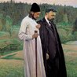

Philosophical Counseling
In brief
- A philosopher counselor helps clients identify and name the emotions troubling them, through conversation, aiding the process of emotional self-regulation.
- Philosophical dialogue assists in resolving conflicts between personal desires and adopted societal values by analyzing ethical theories — from ancient to modern — offering therapeutic reflection and new perspectives for overcoming moral dilemmas.
- Philosophical counseling helps in overcoming crises of meaning and rediscovering purpose, both within religious and secular frameworks.
What is Philosophical Counseling?
Rooted in the traditional philosophical methods of dialogue and reflection, philosophical counseling aims at assisting individuals facing life challenges, moral dilemmas in personal and professional life, or those experiencing existential crises of meaning. By critically examining our desires, goals, values, and general worldview — often accepted uncritically through upbringing and education — philosophical therapy helps us distinguish the essential from the non-essential in our lives. In this light, we gain a clearer understanding of who we are, who we wish to become, and what our life goals should be.
Understanding Emotions and Emotional Life Through Dialogue
The philosophical reconsideration of emotions traces far back in history and can be found in nearly all ancient philosophers, from Plato and Aristotle to the Epicureans and Stoics. In antiquity, philosophy was not merely an academic discipline but, above all, an art of living well, achieved through understanding the world and oneself. Thus, nearly every ancient philosopher offers techniques — within their worldview and understanding of human nature — that we can use to control and avoid negative emotions. Drawing on this long tradition of philosophical therapeutic treatment of emotions, my primary goal as a philosophical counselor is to help clients name and thereby identify the emotions troubling them, through dialogue. This is also a crucial step in emotional regulation. By clearly expressing emotions, we not only describe how we feel but also reassess our feelings. Discussing emotions in a safe environment can transform negative emotions like anger or sadness into forgiveness or reconciliation.

Support in Overcoming Moral Dilemmas
Through upbringing, we have all internalized certain values of the communities we live in, guiding our lives accordingly. However, our desires and goals often clash with these values and rules we are reluctant to abandon. A philosophical approach and analysis are invaluable in such conflicts. Various philosophical ethical theories — such as Aristotle's virtue ethics, Kant's deontological ethics, Bentham and Mill's utilitarianism, and more recent ethics like ethics of care — help illuminate the individual moral problems we all face from time to time. Philosophical dialogue facilitates re-examination of the values we have unquestioningly accepted throughout life, the desires and goals we have set for ourselves, offering pathways out of difficult dilemmas.
In Search of Meaning and Ways of Self-Transcendence
At some point in life, we all experience periods where our lives seem meaningless, where we feel we belong nowhere, and everything we do appears insignificant. A sense of lost meaning can be a symptom of clinical psychological conditions. Philosophical counseling has healing and therapeutic outcomes but it is not a substitute for professional psychiatric help. In non-pathological cases, philosophical analysis of our beliefs, goals, and values — which may seem unimportant in moments of crisis — helps restore faith in ourselves and others. The philosophical approach is also open to examining religious beliefs, loss of faith in God, and the return to faith, as well as reflecting on our human need for self-transcendence — overcoming personal interests to feel part of a much larger, meaningful whole: humanity, nature, and the universe.